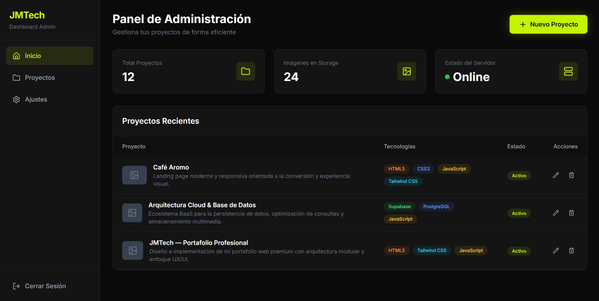
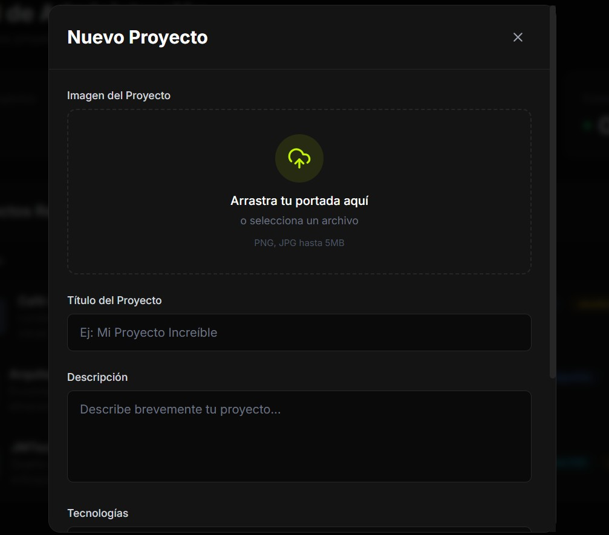

Dashboard de Administración & Operaciones CRUD
Diseño y desarrollo de un panel de control privado e interactivo que permite gestionar de forma segura el catálogo de proyectos, procesar altas, bajas, modificaciones y controlar el estado de la aplicación en tiempo real.
touch_app Experiencia de Usuario
Centrada en la usabilidad con flujos de navegación limpios e intuitivos. Implementación de control de estados de carga (spinners/skeletons) al interactuar con la base de datos para proporcionar feedback visual inmediato durante las operaciones asíncronas.
security Seguridad y Accesos
Restricción de rutas mediante middleware de autenticación para que solo el administrador pueda realizar modificaciones críticas en el sistema. Implementación de tokens de sesión y verificación de permisos en cada operación sensible.

edit_note Componentes del CRUD
Modularización de tarjetas y formularios de edición para que la manipulación de datos sea intuitiva y rápida. Cada operación CRUD está encapsulada en componentes reutilizables con validación integrada y manejo de errores centralizado.

verified Características Clave
- Manejo de estados globales optimizado con React Context
- Formularios con validación interactiva en tiempo real
- Modales de confirmación para acciones destructivas
- Interfaz 100% responsiva para pantallas táctiles
- Sincronización automática con Supabase en tiempo real
- Sistema de notificaciones toast para feedback de usuario
import { useState } from 'react'
import { supabase } from '@/lib/supabase'
export default function ProjectForm({ project, onSuccess }) {
const [formData, setFormData] = useState({
name: project?.name || '',
description: project?.description || '',
image_url: project?.image_url || ''
})
const [loading, setLoading] = useState(false)
const handleSubmit = async (e) => {
e.preventDefault()
setLoading(true)
const { error } = project
? await supabase
.from('projects')
.update(formData)
.eq('id', project.id)
: await supabase
.from('projects')
.insert([formData])
setLoading(false)
if (!error) {
onSuccess()
}
}
return (
<form onSubmit={handleSubmit}>
{/* Form fields */}
</form>
)
}